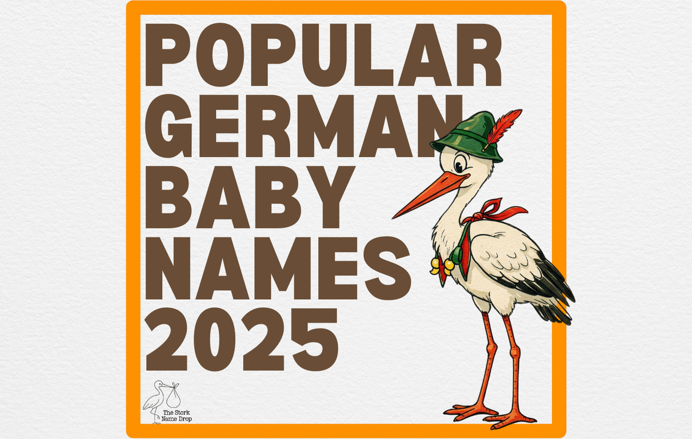

German Baby Names: Predictions & Trends for 2025
Willkommen! Are you expecting a little one in 2025 and looking for the perfect German baby name? Germany boasts a rich history of beautiful, strong, and meaningful names. While official statistics for 2025 aren't out yet, we can look at current trends and popular choices to predict what might be climbing the charts.
From timeless classics to modern favourites, let's explore some popular German names and trends that are likely to continue influencing parents' choices next year.
Current Trends in German Baby Names
Recent years have shown a few key trends in Germany:
- Short & Sweet: Shorter names, often ending in "-a" for girls and "-o" or a consonant for boys, remain very popular (e.g., Mia, Emma, Ben, Paul).
- Classic Revival: Traditional German names, sometimes seen as old-fashioned a generation ago, are making a strong comeback (e.g., Emil, Anton, Clara, Johanna).
- International Influence: Familiar international names are widely used, often alongside German classics (e.g., Noah, Liam, Sofia, Hannah).
- Nature Names: While perhaps less common than in English-speaking countries, nature-inspired names are present (e.g., Leni (often linked to Helene/Magdalena), Florian).
Popular German Names Likely to Continue in 2025
For Girls (Mädchen):
Expect these favourites to remain strong:
- Emilia: A beautiful classic with Roman roots, consistently popular.
- Sophia/Sofia: An international favourite meaning "wisdom".
- Emma: Timeless, gentle, and globally loved.
- Mia: Short, sweet, and a chart-topper in recent years.
- Hannah: A biblical classic with enduring appeal.
- Lina: A popular short form, often for names like Paulina or Karolina.
- Mila: Slavic roots, meaning "gracious" or "dear".
- Ella: Simple, elegant, and internationally recognized.
- Clara/Klara: A clear, bright-sounding classic.
- Lea/Leah: Another popular biblical name.
For Boys (Jungen):
These names have shown consistent popularity:
- Noah: A global favourite, topping charts in Germany too.
- Matteo/Mateo: The Italian/Spanish form of Matthew, very popular.
- Leon: Strong and classic, meaning "lion".
- Finn: Irish roots, short and cool.
- Paul: A timeless biblical and saint's name.
- Luca/Luka: Italian/Slavic roots, popular across Europe.
- Elias: A biblical prophet name with a gentle sound.
- Emil: A charming vintage revival name.
- Felix: Latin origin, meaning "lucky" or "successful".
- Louis/Luis: A royal name with French/Spanish/German variations.
Potential Rising Stars for 2025
Keep an eye on names that are climbing or fit current trends:
- Girls: Ida, Frieda, Johanna, Leni, Mathilda, Amalia
- Boys: Anton, Theo, Oskar/Oscar, Jakob, Jonathan, Maximilian
Choosing a German Name
When selecting a German name, consider:
- Pronunciation: How easily can it be pronounced in both German and English (if relevant for your family)?
- Meaning: Does the name's meaning resonate with you?
- Flow: How does it sound with your surname?
- Popularity: Do you prefer a common favourite or something less frequently heard?
Whether you opt for a chart-topper like Emilia or Noah, a revived classic like Anton or Clara, or something more unique, the world of German baby names offers wonderful choices for 2025!
Let me know when you're ready for the next one (song_content.html).